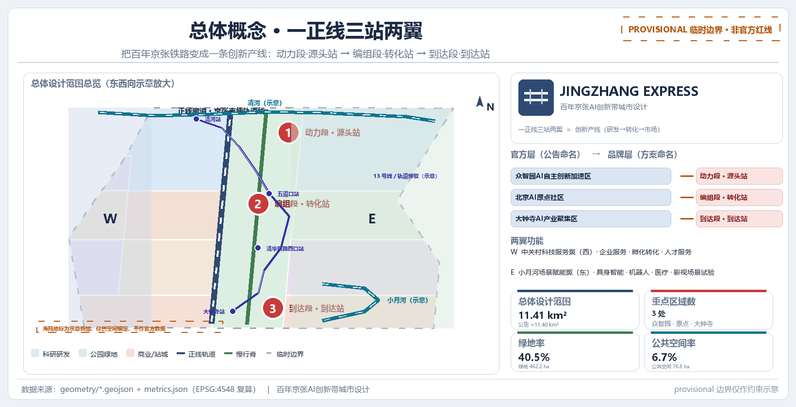
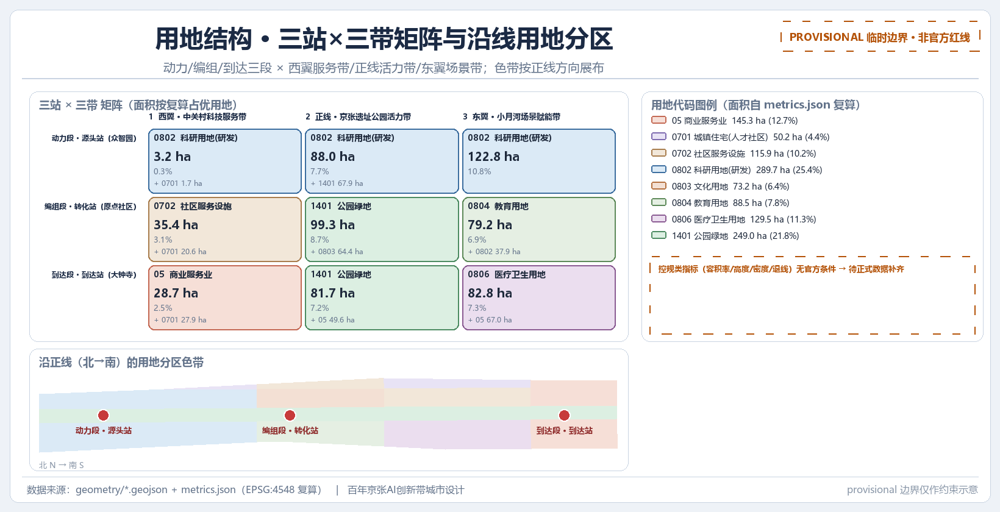
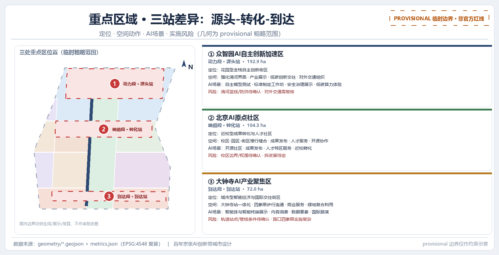
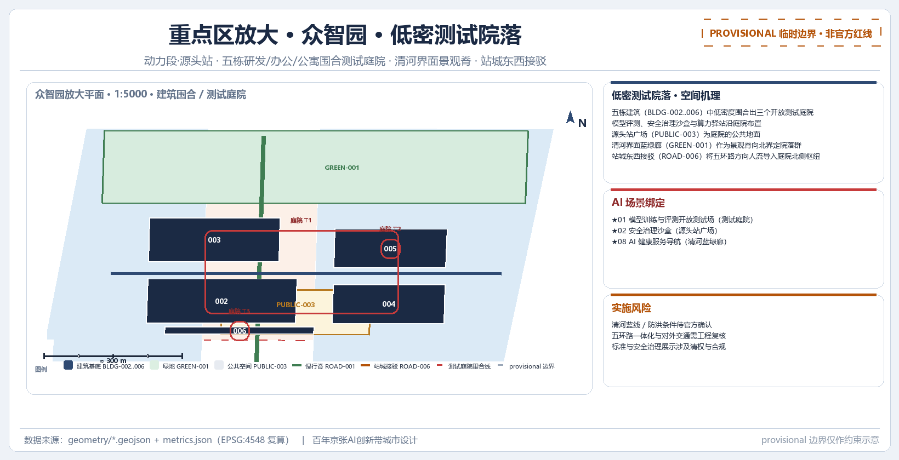
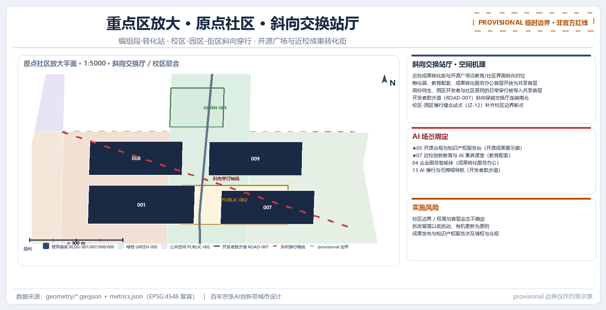
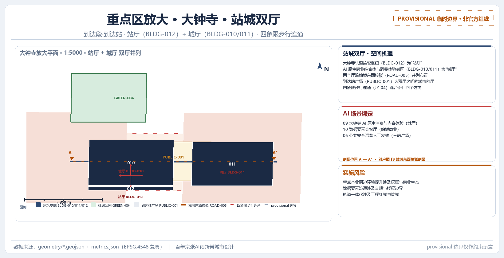
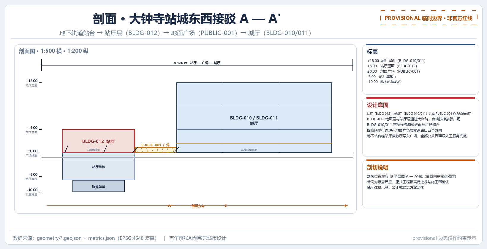
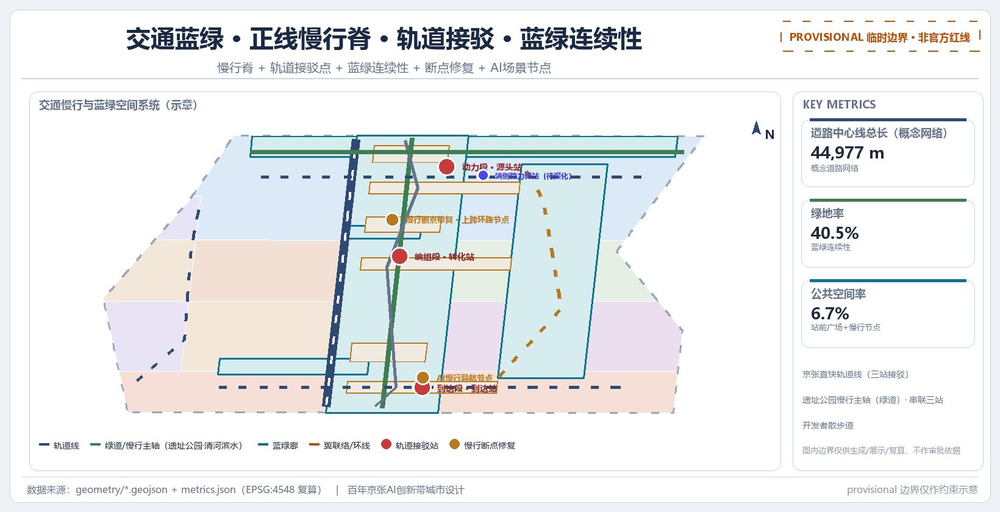
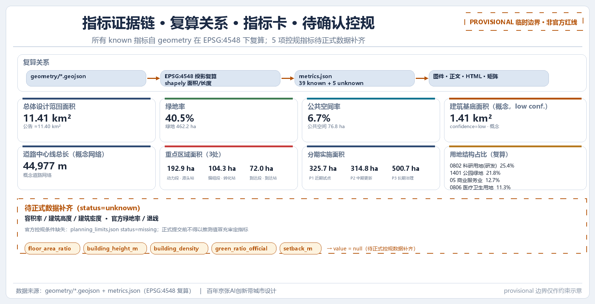

京张直快 JINGZHANG EXPRESS：把百年京张铁路变成一条创新产线
以京张铁路遗产为空间主轴，把创新链的源头—转化—市场三个阶段映射为众智园、北京AI原点社区、大钟寺三个站点，形成“一正线三站两翼”的创新产线结构；三处重点区名称与三条主题带为官方规划命名层，“京张直快 JINGZHANG EXPRESS”为品牌叙事层，不替代官方命名。全部空间建议为概念建议，基于 provisional boundary 生成，待正式数据补齐后复算。
京张直快 JINGZHANG EXPRESS：把百年京张铁路变成一条创新产线
设计依据与资料清单
本方案是“百年京张AI创新带城市设计国际方案征集”的开放共创成果，由 AI agent 依据北京市规划和自然资源委员会海淀分局发布的资格预审公告、面向全球智能体的开源征集任务书，以及仓库登记的三层范围、三处重点区域、图层、指标和来源清单生成 来源 来源。公告是本方案任务、范围、深度和成果语境的主控依据，任务书补充了三大定位、五大功能、三区两翼、六项智能体任务和十条共创原则，二者共同构成设计判断的出发点 标准 标准。
本方案采用“provisional boundary”工作模式：征集组织方的精确红线、三处重点区域官方 polygon 和控规条件尚未公开发布，仓库维护者依据公告文字四至与面积值推定了临时粗略边界（brief/site-package/geometry/provisional_boundaries.geojson），供智能体先跑通生成、自检和可视化 来源。该临时边界仅在正文、HTML、自检和讨论中作为临时约束范围使用，不作为官方红线、审批依据、精确面积依据或正式专业评分依据；该数据缺口不阻断内容评分，替换 official polygon 后所有图层与指标均需复算 深度。
全部机器可读证据保存在提交包的 geometry/*.geojson、metrics.json、assumptions.json、compliance_matrix.json、standard_matrix.json 与 design_depth_matrix.json 中；正文只在具体判断后放置少量关键证据标记，完整机器索引不回灌正文。资料使用边界以 data/source_registry.json 为准：formal 可用资料可支撑权威判断，背景资料不能支撑空间控制结论，provisional 资料只能支撑临时生成、可视化与讨论，agent 不得把 background_only 或 provisional_only 资料升级为法定控规、正式评分依据或政府实施承诺 来源。
本节的资料清单分为五类：官方公告与任务书、专业标准与本地参考、结构化场地数据、处理层导航资料、以及临时边界与假设。正文各节末尾均保留了“概念建议 / 参考方案 / 可供专业团队深化研究”限定语；任何涉及控规指标、建筑高度、拆改留、道路红线、市政管线、投资测算、开发时序与活动安排的表述都按此边界书写，不得写成已确定政府决策或实施安排 来源。
证据分级表
为便于专业团队判断每一证据层能支撑什么、不能支撑什么，本方案把包内证据按六层分级如下。该分级与 深度 的复算规则和替换触发逻辑配套，正式依据的上限为公告与任务书 来源 来源。
| 证据层级 | 本包实例 | 可以支持 | 不能支持 |
|---|---|---|---|
| 任务与专业标准（formal） | 官方公告/清权任务书/规划与控规标准 | 任务覆盖、成果深度、专业审阅原则 | 官方 polygon、权属、工程条件、许可或政府承诺 |
| 正式可用来源登记 | sources.json / source_registry.json | 来源用途、机制对照、责任回链 | 把案例绩效或登记记录升级为海淀实施事实 |
| 临时空间依据（provisional） | site_boundary / key_areas / 概念功能带 | 概念落位、相对关系、拓扑自检和整体替换触发器 | 法定用地、道路红线、精确面积、建筑控制或权属 |
| 包内派生推演 | GeoJSON / metrics.json / 参数化候选集 | 可复算的取舍、节点动作、版本依赖和审计接口 | 现状测绘、居民需求、设施容量、AI 能力或正式推荐 |
| 行政/开放背景 | 统计、政策、公开案例、OSM 示意 | 校准问题、补采优先级、不确定性说明 | 走廊需求、现场绩效、选址、合作事实或投资承诺 |
| 合成场景与治理方法 | 场景卡、发布门、价值契约 | 人工优先、停止、退出、申诉和后续验证设计 | 现场无障碍、公众同意、专业签章、实施许可或竞赛分数 |
分级结论不改变各节既有的“概念建议 / 参考方案”限定语：凡需法定控制、权属、工程或投资支撑的判断，均待正式数据与专业团队确认后再升级结论 深度。
三层范围工作框架
三层范围是公告确定的工作骨架：统筹研究范围约 43.6 平方公里，负责AI产业生态、战略定位、创新链与未来城市形态的系统研究；总体设计范围约 11.4 平方公里，负责城市更新总体框架、产业空间布局、交通市政支撑与城市风貌控制，达到控制性详细规划的城市设计深度；重点区域范围约 368.4 公顷，负责三处重点区域的详细设计，达到规划综合实施方案的城市设计深度 标准。
本方案以“创新产线”为隐喻，把三个层次转译成一组递进的铁路段：统筹层回答“整条产线往哪里开”，总体层回答“编组、路网和站城关系如何组织”，重点层回答“三个站点各自造什么、怎么落地”。创新链从源头研究、转化孵化到市场集聚的节奏，恰好沿京张铁路方向自北向南延伸：众智园承载基础研究与全栈自主创新，北京AI原点社区承载孵化与转化，大钟寺承载市场、资本与全球交往，因此三层范围不是互相割裂的图纸集合，而是同一产线在不同分辨率下的表达 深度。

图注：图中清河、小月河水系与 13 号线轨道线位均为公开示意叠加，仅用于空间锚定，不作官方红线或交通规划承诺 来源。
三层范围的面积与图层证据如下：总体设计范围以提交包中的 geometry/site_boundary.geojson#SITE-001 表达，复算面积为 11,412,825.386 平方米，与公告约 11.4 平方公里一致（差值来自临时边界推定的精度误差）；重点区域范围为三处 KEY_AREA 之和，数量指标 key_area_count 为 3 空间数据 指标 指标。任何由提交几何复算的面积、比例、建筑规模或项目数量，都只能在“临时边界”口径下讨论，官方 polygon 到位后需按替换触发的复算流程整体重算 深度。
三层范围与官方四至、临时边界、假设的对应关系保存在 data/processed/project_scope_summary.csv 与 assumptions.json 中（假设号 A-BOUNDARY-001、A-BOUNDARY-002、A-AREA-TOLERANCE-001 等）；正文不重复机器索引，读者如需逐条核对可从 compliance_matrix.json 的 1.3、1.4、1.5 与 agent.1—agent.6 覆盖进入 来源。
三层范围框架本身不新增伪精确红线，它把公告的三层任务转译为工作方法。本节涉及的三层边界均为概念建议，具体范围认定须待正式控规与官方 CAD/GIS 数据确认后由专业团队深化 深度。
统筹研究范围产业与未来城市研究
命名层级与品牌叙事
本方案首先明确命名层级，避免叙事层与规划层混淆：
- 官方规划命名层：三个重点区域名称（众智园AI自主创新加速区、北京AI原点社区、大钟寺AI产业集聚区）与三条主题带（百年京张文化带、都市AI生活体验带、AI融合创新带）是沿用公告与任务书术语的正式命名 来源 来源。
- 品牌叙事层：“京张直快 JINGZHANG EXPRESS”是一层叠加在官方命名之上的叙事与视觉品牌，不是规划编号，不替代、不覆盖三处重点区与三条主题带的官方名称。叙事层借用“铁路—产线”意象，让命名、Logo、活动体系和国际传播共享同一张脸，但不改写任何法定名称。
Logo 与视觉识别方向（概念建议）：以“一列穿越百年铁路的创新快车”为核心符号，三节车厢对应三处重点区域，两条轨道对应中关村科技服务翼与小月河场景赋能翼，整体形成向南北延伸的速度线；英文字标使用 JINGZHANG EXPRESS，中文识别以“京张直快”为主、附“百年京张AI创新带”官方全称。所有字体、图形、历史图像与标志在使用前必须完成清权 标准 来源。
三区两翼与创新链协同
统筹研究按“三站两翼”组织AI创新生态：动力段·源头站对应众智园AI自主创新加速区，负责基础研究到全栈自主创新（AI研发、算力底座、模型训练、标准与安全治理）；编组段·转化站对应北京AI原点社区，负责中试、孵化与转化（近校转化、开源协作、人才服务）；到达段·到达站对应大钟寺AI产业集聚区，负责市场、资本与全球门户（AI原生消费、数据要素、国际交流）。两翼分别由中关村科技服务翼（资本、知识产权与全球要素配置）与小月河场景赋能翼（具身智能、机器人低速配送试点、AI+医疗、AI+影视等场景验证）构成，与任务书“三区两翼”定义一致 来源。
三条主题带是横切整个场地的空间层级，不是新增红线，而是把官方定位转译为可感知的城市层次：百年京张文化带串联铁路遗产、车站记忆与公共文化叙事；都市AI生活体验带组织可体验的AI生活与消费场景；AI融合创新带承载研发、孵化与产业集聚功能。三站与三带形成一张交叉矩阵，保证每处重点区域在三个维度上都有明确任务：
| 动力段·源头站（众智园） | 编组段·转化站（原点社区） | 到达段·到达站（大钟寺） | |
|---|---|---|---|
| 百年京张文化带 | 清河文化、源头叙事、工业记忆与站台历史 | 清华园车站人文、近校文化客厅、成果发布仪式 | 大钟寺历史地标、城市门户文化、国际展陈 |
| 都市AI生活体验带 | 低碳绿色创新交往、绿色空间AI场景 | 校区-园区-街区融合生活、人才社区 | AI原生消费、内容体验、夜活力商业 |
| AI融合创新带 | 全栈自主创新、标准制定与安全治理展示 | 孵化器、成果转化、开源协作、人才特区 | 数据要素、智能终端、国际路演与资本对接 |
上表反映的是概念性的三站×三带组织逻辑，具体功能配比与空间落点需结合权属、控规与产业数据由专业团队深化，本表不作实施承诺 来源 深度。
区域协同与全球资源配置
统筹研究以概念建议方式提出京张AI创新带与周边创新极的分工协同，目的是把“一正线三站两翼”放进更大的城市与区域创新网络，而不是在行政边界内封闭自足：北纬社区宜围绕生态与青年社区场景协同，承接创新人才的日常居住与交往需求；未来科学城以研发与中试链条协同，为源头站提供试验放大的互补环节；怀柔科学城以基础科研策源协同，为众智园的全栈自主创新提供原始理论与大科学设施接口；经开区以智能制造与应用转化协同，承接模型与产品的规模化落地；京津冀层面则以张北绿电算力、津冀制造与场景腹地协同，支撑低碳算力与市场腹地。上述协同均以“网络化、可演化”为取向，是可供专业团队深化研究的参考方案，不代表既有协同安排或任何政府承诺 来源 深度。
在要素流动层面，本方案把中关村科技服务翼定位为“要素全球化配置”的枢纽性概念：知识产权、资本、人才、数据与算力五类要素通过跨区域流动机制在站点之间配置，使源头的成果与标准、转化的中试与开源、到达的市场与资本在各站点形成可交换、可承接的接口，与京津冀及国际节点保持可对接的开放边界。这一配置机制属于概念建议，具体由哪些机构以何种协议与合规边界运行，须待授权与专业团队深化研究 来源 来源。
上述协同整体上是“网络化、可演化”的，不是行政边界内的封闭体系：京张AI创新带作为贯通南北的正线，把北部科学城的策源、中部高校与园区的孵化转化、南部市场与资本的到达串成一条协同链路，使周边创新极成为同一产线的外延节点而非并列的孤立板块。该链路的定性判断均为参考方案，是否采纳以及如何落地，须由专业团队结合控规与官方数据深化研究 深度 深度。
规划创新：空间产业融合与国土空间规划思路
本方案对“综合规划内涵”的回应是“一张图上的综合”：产业规划、空间规划、运营规划与公共参与不再分册表达，而是以 GeoJSON 图层承载空间与产业、metrics 承载可复算指标、矩阵承载任务与证据映射，在同一张图上统筹（如 geometry/land_use.geojson、metrics.json 与 compliance_matrix.json 的联动）。这是对规划方法本身的概念建议，不是法定综合规划成果，具体图层体系、指标与参与机制须由专业团队深化 空间数据 深度。
本方案以“站即产业阶段”回应“空间产业融合”：创新链“研究→孵化→市场”与空间站序列一一映射——众智园是研究阶段的站、原点社区是孵化阶段的站、大钟寺是市场阶段的站；每站内部混合产业、公共与生活功能，使研究、交往、通勤与日常生活在同一街区咬合，形成职住商服均衡的单元。这一映射是空间产业融合的概念化表达，站内具体功能配比与混合比例须结合控规、权属与产业数据深化研究 来源 深度。
在国土空间规划创新层面，本方案提出“可演化的图层式规划”：用地、指标与项目都以可复算的数据图层表达，允许在官方边界与控规条件到位后动态复算，这是 provisional boundary 工作模式在方法上的延续；与一次性出图的静态图纸不同，这是一种 AI 原生的规划方法，把“规划即数据、数据可复算”作为方法内核。需要强调，这是对规划方法本身的创新建议，不是法定规划成果，也不替代任何审批程序，方法可行性须由专业团队结合官方数据验证 来源 深度。
全球AI创新生态案例研究
统筹研究还对比了 5—8 个全球AI创新生态案例（以下均为公开研究梳理，标注信息来源性质，不编造投资额、产值或企业名单）：美国硅谷以“风险资本+大学+开放文化”构成持续创新循环；波士顿 Kendall Square 以大学实验室、医院与创业社区咬合形成“实验室—转化—上市”的链条；深圳依托硬件供应链与大规模制造能力形成“整机—模组—元器件”的敏捷迭代生态；杭州以平台型公司与数字消费场景带动创新扩散；新加坡以国际枢纽身份组织数据、资本与合规环境；以色列特拉维夫以高强度研发密度与中小企业协作著称；伦敦金融城周边的AI创业集群强调金融与场景耦合；圣何塞则是硅谷南部面向下一代智能终端的产业前沿。这些案例的共同点是：创新链不是孤立的研发岛，而是“研究—转化—市场”在城市空间上连续咬合的系统 来源。
对照这些案例，本方案把“三站两翼”组织为可迁移的机制集合：众智园对应“源头研发与治理平台”，原点社区对应“大学触角与转化窗口”，大钟寺对应“市场与资本出口”，两翼对应“资本/知识产权服务”与“场景验证场”。案例研究只用于支撑机制与结构判断，不用于推断海淀的具体企业、投资或政策安排 标准。
文化叙事与导览路线
统筹层还定义了从“争气路”到“创新路”再到“未来路”的文化叙事：百年京张铁路是中国人自主筑路的“争气路”，中关村是改革开放后自主创新的“创新路”，今天的人工智能创新带则是在同一条地理带上延伸的“未来路”。这一叙事把铁路遗产、中关村文化与AI新文化连成一条时间轴，支撑导览路线“三站九节点”：起点站（众智园）设源头叙事与治理展示节点，中段站（原点社区）设开源与转化节点，终点站（大钟寺）设市场与国际交往节点，每站三个节点形成可步行、可讲解、可传播的九节点路线 来源 标准。
统筹研究范围涉及的所有命名、Logo、活动与路线设计均为概念建议，具体命名体系、视觉识别与导览运营须由专业团队结合清权、招商与运营条件深化，本方案不作出任何官方品牌或活动承诺 来源。
总体设计范围城市更新与控规深度城市设计
城市更新总体框架
总体设计范围以城市更新为抓手，目标是支撑AI产业空间供给并优化职住商服关系。方案提出“一正线三站两翼”的空间结构：一正线指沿京张遗址公园贯通的创新产线主轴（文化、慢行与功能复合走廊）；三站即三处重点区域形成的创新站点；两翼为站点东西两侧的中关村科技服务翼与小月河场景赋能翼。正线既是铁路遗产的叙事主轴，也是慢行、蓝绿与公共空间的连续骨架 深度。
城市更新的对象以低效空间与遗址公园两侧地区为主，识别逻辑遵循公告要求：更新潜力空间资源、更新项目功能业态、职住商服均衡、AI企业聚集目标与AI产业空间规模。本节只给出识别框架与项目清单的目录级表达，具体地块边界、权属和拆改留结论一律留待正式控规与专业深化，不在文本中给出伪精确控制线 标准。

用地结构
用地结构由 geometry/land_use.geojson 表达（12 个设计地块，代码遵循自然资源部《国土空间调查、规划、用途管制用地用海分类指南》语义），关键代码与占比（复算自 metrics.json，均为设计口径）如下：科研用地（0802）占 25.4%，是众智园AI研发与机器人试验研发的主体；公园绿地（1401）占 21.8%，即京张遗址公园活力带；商业服务业用地（05）占 12.7%，集中在大钟寺站城商业与AI原生消费；医疗卫生用地（0806）占 11.3%，支撑小月河翼的AI+医疗场景；城镇社区服务设施用地（0702）占 10.2%；教育用地（0804）占 7.8%；文化用地（0803）占 6.4%；城镇住宅用地（0701）占 4.4% 空间数据 空间数据。上述占比对应的量化支撑见 指标，并以 指标 与公园绿地面积相互复核。用地布局的完整面积与占比见 metrics.json，本节仅摘其设计含义；所有用地地块均为设计建议，不构成已批准用地布局 标准 深度。
参数化候选集：空间取舍的可复算过程
本方案把用地结构表述为一组可复算的取舍研究，而不是单一固定答案：以当前提交的 8 个用地代码（05/0701/0702/0802/0803/0804/0806/1401）与总体设计范围面积为输入，定义 3 组透明参数——人本优先（增加绿地与社区、略减科研）、平衡（小幅微调、结构不变）、机器协同（增加科研与商业、略减绿地与社区）。每组参数仅对若干关键类别的占比做 ±0.2 至 ±1.6 个百分点的小幅平移，其余类别占比保持基线不变；每个候选按 面积 = 占比 × 场地面积 复算，其中场地面积取 指标，科研与绿地基线占比分别取 指标 与 指标，复算规则与 深度 一致 来源。
三组参数候选的占比与面积差分如下表。所有候选均为概念级决策示意，置信度低，不修改任何已提交几何、指标或官方表述，仅作为专业团队在正式控规与权属数据到位前进行空间取舍的参考工具，全部按概念建议与参考方案口径表达 来源 深度。
| 候选 | 描述 | 科研0802 | 绿地1401 | 商业05 | 社区/居住0701+0702 | 其他0803/0804/0806 | 科研0802复算面积(m²) | 绿地1401复算面积(m²) | 关键差分(Δpp) |
|---|---|---|---|---|---|---|---|---|---|
| 基线 | 提交现状（metrics 复算） | 25.4% | 21.8% | 12.7% | 14.6% | 25.5% | 2,898,858 | 2,487,996 | — |
| 人本优先 | 增绿地(+1.0)、社区(+0.6)，略减科研(-1.6) | 23.8% | 22.8% | 12.7% | 15.2% | 25.5% | 2,716,252 | 2,602,124 | 科研-1.6 / 绿地+1.0 / 社区+0.6 |
| 平衡 | 小幅微调，结构不变 | 25.2% | 22.0% | 12.7% | 14.6% | 25.5% | 2,876,032 | 2,510,822 | 科研-0.2 / 绿地+0.2 |
| 机器协同 | 增科研(+1.6)、商业(+1.0)，略减绿地(-1.3)、社区(-1.3) | 27.0% | 20.5% | 13.7% | 13.3% | 25.5% | 3,081,463 | 2,339,629 | 科研+1.6 / 商业+1.0 / 绿地-1.3 / 社区-1.3 |
注：每个候选的占比合计均为 100.0%（四舍五入到 0.1 个百分点），复算面积 = 占比 × 11,412,825.386 m² 指标。对其中两组最有代表性的候选（人本优先、机器协同），按 8 个用地代码逐一给出与基线的差分（面积差 = Δpp × 11,412,825.386 m²）指标。
| 用地代码 | 类别 | 基线 | 人本优先 | Δpp | 面积差(m²) | 机器协同 | Δpp | 面积差(m²) |
|---|---|---|---|---|---|---|---|---|
| 0802 | 科研 | 25.4% | 23.8% | -1.6 | -182,605 | 27.0% | +1.6 | +182,605 |
| 1401 | 公园绿地 | 21.8% | 22.8% | +1.0 | +114,128 | 20.5% | -1.3 | -148,367 |
| 05 | 商业服务业 | 12.7% | 12.7% | 0.0 | 0 | 13.7% | +1.0 | +114,128 |
| 0702 | 城镇社区服务设施 | 10.2% | 10.8% | +0.6 | +68,477 | 8.9% | -1.3 | -148,367 |
| 0701 | 城镇住宅 | 4.4% | 4.4% | 0.0 | 0 | 4.4% | 0.0 | 0 |
| 0803 | 文化 | 6.4% | 6.4% | 0.0 | 0 | 6.4% | 0.0 | 0 |
| 0804 | 教育 | 7.8% | 7.8% | 0.0 | 0 | 7.8% | 0.0 | 0 |
| 0806 | 医疗卫生 | 11.3% | 11.3% | 0.0 | 0 | 11.3% | 0.0 | 0 |
| 合计 | — | 100.0% | 100.0% | — | — | 100.0% | — | — |
上述候选集为概念级决策示意：置信度低，不修改已提交几何、指标或官方表述；官方边界与控规条件（含官方用地与道路红线）到位后，本组候选集将按替换触发流程整体复算，作为专业团队的取舍参考 深度 空间数据。
开发强度与待确认控规条件
涉及容积率、建筑高度、建筑密度、绿地率（官方口径）与退线的指标，在 metrics.json 中状态均为 unknown（floor_area_ratio、building_height_m、building_density、green_ratio_official、setback_m），原因统一记录为官方控规条件缺失、待正式附件补齐 指标 指标。方案不给出任何容积率、高度或强度数值，也不把设计建议冒充审定指标；待正式控规条件发布后，所有建筑规模、密度与退线结论需按假设 A-CONTROLS-001 与 A-CONTROLS-002 复算 深度。
本节涉及的城市更新框架、用地结构与开发强度判断均为概念建议，具体拆改留、控规指标与实施时序须待正式控规、权属与工程条件确认后由专业团队深化。
重点区域详细设计
三处重点区域是“三站”的物理载体，分别对应创新链的源头、转化与到达三个环节。三处片区在 geometry/key_areas.geojson 中均有独立图层（PROV-KEY-001/002/003），当前为临时粗略边界，官方 polygon 到位后需按假设 A-BOUNDARY-002 复算 空间数据 空间数据 空间数据；三处片区的详细设计深度由设计深度矩阵中的 深度 约束。

动力段·源头站：众智园AI自主创新加速区
定位：花园型全栈自主创新街区，对应创新链的“源头”，承载基础研究、算力底座、模型训练与标准/安全治理。复算面积约 192.92 公顷（公告约 192.1 公顷）指标。

放大平面把“低密测试院落”原型落到图纸：研发组团围合半开放测试庭院，模型评测、安全治理沙盒与算力驿站沿庭院布置，可追溯到科研用地（0802）上的复算落点 空间数据 空间数据。
空间形态原型：低密测试院落
众智园的空间形态原型是“低密测试院落”：AI研发中心、全栈自主创新实验室、算力与标准服务办公与人才公寓（BLDG-002—BLDG-006）以中低密度围合成若干开放测试庭院，模型评测、安全治理沙盒与算力驿站沿庭院布置，源头站广场（PUBLIC-003）成为庭院的公共地面，清河界面（ROAD-008）作为园区景观脊向北界定院落群 空间数据 空间数据。这一原型“远观可读出庭院—绿带—站场的院落城市结构，近观可追溯到每个测试场地、算力驿站与标准工作坊在科研用地（0802）上的可复算落点” 空间数据。设计动作以“围合”为主：研发组团围合出半开放测试庭院，景观脊缝合庭院与滨水界面，站城东西接驳（ROAD-006）把五环路方向人流导入庭院北侧的接驳枢纽 空间数据。
- 空间结构：以清河为界面的创新交往带 + 研发组团 + 治理展示组团，构建“南研北展、蓝绿环抱”的布局 空间数据。
- 建筑更新：众智园·AI研发中心、全栈自主创新实验室、算力与标准服务办公、创新人才公寓、源头站接驳枢纽（BLDG-002—BLDG-006）构成建筑基底意象；实际拆改留以权属与现状为准 空间数据。
- 交通慢行：强化对外交通（含五环路方向）与站城东西接驳（ROAD-006），以遗址公园慢行主轴为南北联系 空间数据。
- 公共空间：源头站广场（PUBLIC-003）与清河·众智园创新界面蓝绿廊（GREEN-001）承载开放测试、标准工作坊与治理展示 空间数据 空间数据。
- AI场景：模型训练与评测开放测试场、安全治理沙盒、低碳算力体验（见第六节场景卡 01、02）。
- 实施风险：五环路一体化与对外交通涉及工程红线，清河蓝线与防洪条件未定，标准与安全治理展示涉及合规与清权，均列为深化前置条件 来源。
编组段·转化站：北京AI原点社区
定位：近校型成果转化与人才社区，对应创新链的“转化”，面向清华、北大、中科院等原始创新策源，组织孵化、转化、开源协作与人才服务。复算面积约 104.32 公顷（公告约 104.3 公顷）指标。

放大平面表达“斜向交换站厅”的对角对位：近校成果转化街与开源广场沿教育用地（0804）斜向相交，穿行口、首层业态与慢行缝合点可追溯到教育用地上的几何落点 空间数据 空间数据。
空间形态原型：斜向交换站厅
原点社区的空间形态原型是“斜向交换站厅”：近校成果转化街与开源广场（PUBLIC-002）沿教育用地（0804）与社区界面斜向对位，近校成果转化孵化器（BLDG-001）、开源创新教育配套（BLDG-007）与成果转化服务办公（BLDG-009）首层开放，把高校师生、园区开发者与社区居民的日常穿行导入共享首层，形成校区—园区—街区之间的公共交换厅 空间数据 空间数据。这一原型“远观可读出转化街—开源广场—教育用地构成的对角公共交换厅，近观可追溯到穿行口、首层业态与慢行缝合点在教育用地（0804，复算占比约 7.8%）上的几何落点” 指标。设计动作以“穿行”为主：开发者散步道（ROAD-007）斜向穿过交换厅联系南北站点，校区-园区慢行缝合试点（JZ-12）补齐校区边界断点，开源路演与成果发布共享广场公共地面 空间数据。
- 空间结构：以近校成果转化街 + 开源协作组团 + 人才居住组团组织校区-园区-街区融合。
- 建筑更新：近校成果转化孵化器、开源创新教育配套、人才服务驿站、成果转化服务办公（BLDG-001、BLDG-007—BLDG-009）构成建筑基底意象 空间数据。
- 交通慢行：围绕五道口、清华东路西口等轨道站点开展一体化设计，校区园区之间以慢行缝合 来源。
- 公共空间：转化站广场（PUBLIC-002）与原点社区·开源广场绿地（GREEN-005）承载成果发布、开源路演与人才活动 空间数据。
- AI场景：开源成果展示廊、近校创新教育与AI素养课堂、企业服务智能体、开源合规与知识产权服务台（见第六节场景卡 04、05、07）。
- 实施风险：校区边界、权属与首层业态不确定，拆改留需以低扰动、有机更新为原则，成果发布与知识产权服务涉及清权与合规 标准。
到达段·到达站：大钟寺AI产业集聚区
定位：城市型智能经济与国际交往街区，对应创新链的“到达”，承载智能体、智能终端、内容消费、数据要素与数字资产流通。复算面积约 72.05 公顷（公告约 72.0 公顷）指标。

放大平面表达“站城双厅”的并列体量：站厅—广场—城厅沿站城东西接驳共享公共地面，四象限步行连通可追溯到商业用地（05）上的复算落点 空间数据 空间数据。
空间形态原型：站城双厅
大钟寺的空间形态原型是“站城双厅”：大钟寺轨道接驳枢纽（BLDG-012）形成“站厅”，AI原生商业综合体与消费体验街区（BLDG-010/011）形成“城厅”，两个厅沿站城东西接驳（ROAD-005）并列布置并共享公共地面，到达站广场（PUBLIC-001）成为双厅之间的城市前厅 空间数据 空间数据。这一原型“远观可读出站厅—广场—城厅三个并列体量构成的双厅城市结构，近观可追溯到四象限步行连通、内容消费与数据要素展示在商业用地（05，复算占比约 12.7%）上的可复算落点” 指标。设计动作以“双厅并列+四象限缝合”为主：站城东西接驳（ROAD-005）串联双厅与东西象限，四象限步行连通（JZ-04）缝合路口四个方向，数据要素会客厅与AI原生消费共享同一公共地面 空间数据。
- 空间结构：以大钟寺站一体化枢纽 + 站城商业街区 + AI原生消费体验街区组织；规划绿地复合利用。

剖面表达站厅—广场—城厅沿东西接驳轴线的竖向空间关系，接驳连通与公共地面共享在剖面上可追溯 空间数据 空间数据。
- 建筑更新：大钟寺·AI原生商业综合体、AI消费体验街区、轨道接驳枢纽（BLDG-010—BLDG-012）构成建筑基底意象 空间数据。
- 交通慢行：开展大钟寺地铁站所在路口四象限步行连通设计，完善非机动车停放等静态交通组织，站城东西接驳（ROAD-005）提升重点地块连通度 空间数据。
- 公共空间：到达站广场（PUBLIC-001）与大钟寺·站城公园绿地（GREEN-004）承载国际交往、内容消费与数据要素展示 空间数据。
- AI场景：大钟寺AI原生消费与内容体验、数据要素会客厅、公共安全运营人工复核（见第六节场景卡 06、09、10）。
- 实施风险：重点企业周边环境提升涉及权属与商业生态，数据要素流通涉及合规与授权边界，轨道一体化涉及工程红线与管线，均列为深化前置条件 来源。
三处重点区域的定位、空间动作、建筑、交通、公共空间与AI场景均按概念建议深度表达，任何拆改留、建筑规模与实施时序结论须待正式控规、权属与工程条件确认后由专业团队深化，本方案不构成审批依据 深度。
AI 创新生态、人才画像与 AI+ 场景
用户画像
面向 AI 人才和企业的空间需求画像，本方案定义六类核心用户（满足不少于 5 类要求），并对应空间响应与自检边界：
| 用户画像 | 典型需求 | 空间响应 | 自检边界 |
|---|---|---|---|
| 研究者（高校/院所） | 算力、数据、跨校协作、成果发布 | 源头站研发组团、近校转化街、成果发布厅 | 校园数据与科研成果须授权 |
| 开发者（开源社区） | 发布、协作、测试、社区声誉 | 开源成果展示廊、代码贡献墙、夜间协作空间 | 不采集个人行为轨迹，活动数据仅聚合 |
| 创业者（初创团队） | 低成本办公、算力入口、产品试验场 | 共享测试场、端侧算力服务点、合规咨询 | 算力与数据服务另行授权 |
| 投资人/产业资本 | 项目源、路演、尽调、国际对接 | 大钟寺国际路演客厅、数据要素会客厅 | 企业标识与案例须清权 |
| 市民与老年群体 | 通勤、休闲、就医、数字助老 | 遗址公园慢行环、AI健康服务导航、人工柜台 | 不将居民画像用于商业推荐；保留人工服务通道 |
| 国际访客 | 导览、交往、消费、通关体验 | 三站导览、双语导视、国际路演与消费街区 | 多语种内容须清权，不作隐私追踪 |
上表为概念性画像，人才服务需求与运营细则须结合真实人口与产业数据深化，不作实施承诺 来源 标准。
AI 场景卡
本方案提供 13 张 AI 场景卡，覆盖 AI+信软、AI+医疗、AI+教育、AI+法律、AI+生活服务、AI+交通、AI+公共空间与 AI+商业，其中 4 个为产业测试验证场景（编号前标 ★）。每张卡给出空间位置、服务对象、数据、隐私边界、人工复核、运营主体与风险七要素：
★01 模型训练与评测开放测试场（众智园，产业测试验证）
- 空间位置：众智园·全栈自主创新实验室（BLDG-003）周边公共测试场地 空间数据
- 服务对象：模型开发者、评测机构、标准组织
- 数据：训练/评测集、公开基准；私有数据仅经授权入库
- 隐私边界：不采集个人隐私，评测过程脱敏
- 人工复核：评测结果与模型上架由技术委员会复核
- 运营主体：概念上由园区平台+第三方评测机构共营
- 风险：算力与数据授权边界需协议约束
02 安全治理沙盒（众智园）
- 空间位置：众智园·源头站广场周边展示协作节点（PUBLIC-003）
- 服务对象：监管研讨、安全评测、标准工作坊
- 数据：红队测试样本、公开合规指引
- 隐私边界：测试样本脱敏，不含真实个人数据
- 人工复核：标准与治理结论由专家评审
- 运营主体：概念上由治理平台+行业组织共营
- 风险：避免把测试场景写成已批准运营
03 京张文化智能导览（ai-cultural-guide）（遗址公园/文化带）
- 空间位置：京张遗址公园活力带与三站文化节点 空间数据
- 服务对象：市民、游客、国际访客
- 数据：公开历史资料、清权图片与语音
- 隐私边界：不追踪个人轨迹，仅提供按需导览
- 人工复核：历史文化内容由专家校对
- 运营主体：概念上由文旅运营方+内容团队共营
- 风险：历史叙事须准确，涉及照片肖像须清权
04 企业服务智能体（enterprise-service-copilot）（原点社区/众智园）
- 空间位置：原点社区·成果转化服务办公（BLDG-009）与园区服务节点
- 服务对象：初创企业、成果转化团队、头部企业服务部门
- 数据：公开政策、园区服务目录、企业授权资料
- 隐私边界：企业数据仅在授权内使用，不跨主体共享
- 人工复核：政策与合规建议由专业顾问复核
- 运营主体：概念上由园区运营商+专业机构共营
- 风险：不得把未经授权或未经核实的资料写成事实
★05 开源合规与知识产权服务台（AI+法律，产业测试验证）（原点社区）
- 空间位置：原点社区·开源成果展示廊与法务服务节点 空间数据
- 服务对象：开源项目、创业团队、成果转化主体
- 数据：开源许可证文本、公开司法判例、清权信息
- 隐私边界：个案资料仅限当事方
- 人工复核：法律意见由持证法律专业人员复核，AI 只做材料整理
- 运营主体：概念上由律所/知识产权机构+园区共营
- 风险：AI 输出不构成法律意见，须明确免责与人工兜底
06 公共安全运营人工复核（public-safety-operations-review）（公共空间）
- 空间位置：三站广场与大型活动公共空间（PUBLIC-001/002/003）
- 服务对象：运营方、活动主办、公共空间管理者
- 数据：公开活动信息、人流聚合数据
- 隐私边界：只做聚合分析，不做个体识别与追踪
- 人工复核：任何预警与处置由人工确认后执行
- 运营主体：概念上由运营方+属地部门共营
- 风险：不得把未成熟技术写成已全面部署，需与监控边界严格区分
★07 近校创新教育与AI素养课堂（AI+教育，产业测试验证）（原点社区）
- 空间位置：原点社区·开源创新教育配套（BLDG-007）与教育用地（LU-005）空间数据
- 服务对象：高校师生、中小学生、再培训人群
- 数据：公开课程、清权教材、实验数据
- 隐私边界：学生数据最小化采集
- 人工复核：课程与评测由教师把关
- 运营主体：概念上由高校+教育机构共营
- 风险：教学成果与校园数据须授权
08 AI健康服务导航（ai-health-service-navigation，AI+医疗）（小月河翼）
- 空间位置：小月河场景赋能翼·医疗卫生用地（LU-010）周边 空间数据
- 服务对象：周边居民、患者、老年群体
- 数据：公开医疗资源目录、挂号信息；个人健康数据仅经授权
- 隐私边界：医疗数据严格最小化，不跨机构共享
- 人工复核：就医建议由医护人员复核，保留人工柜台与电话通道
- 运营主体：概念上由医院+社区卫生+平台共营
- 风险：不得替代临床判断；涉及个人健康数据须合规授权
09 大钟寺AI原生消费与内容体验（AI+商业）（到达站）
- 空间位置：大钟寺·AI原生商业综合体与消费体验街区（BLDG-010/011）空间数据
- 服务对象：消费者、内容创作者、智能终端厂商
- 数据：公开商品与内容信息；消费行为仅聚合
- 隐私边界：不做跨店画像与追踪
- 人工复核：内容审核由运营方人工把关
- 运营主体：概念上由商业运营商+品牌方共营
- 风险：内容与标识须清权，避免过度娱乐化
10 数据要素会客厅（AI+商业/治理）（到达站）
- 空间位置：大钟寺·站城商业区域与数据展示节点
- 服务对象：数据要素市场主体、数字资产机构、监管研讨
- 数据：公开数据目录、授权数据示例
- 隐私边界：展示用合成数据与脱敏样例
- 人工复核：流通机制由合规专家复核
- 运营主体：概念上由交易所/平台+园区共营
- 风险：不推断数据流通已落地，机制与合规边界待确认
★11 小月河低速机器人配送（robot-delivery-low-speed，AI+交通/具身智能，产业测试验证）（小月河翼）
- 空间位置：小月河场景赋能翼慢行环线（ROAD-004）与滨水步道（ROAD-008）空间数据
- 服务对象：园区通勤者、外卖与社区配送需求方
- 数据：路线公开数据、调度聚合数据
- 隐私边界：不拍摄人脸，仅识别障碍物
- 人工复核：异常情况由远程人工接管
- 运营主体：概念上由配送运营方+属地部门试点共营
- 风险：低速配送是测试验证场景，须明确试点边界、通行规则与责任划分
12 AI生活服务样板街（AI+生活服务）（社区/商业交汇处）
- 空间位置：居住与社区服务设施用地（0701/0702）周边街道 空间数据
- 服务对象：周边居民、老年与残障群体
- 数据：公开公共服务目录、清权信息
- 隐私边界：不将居民画像用于商业推荐
- 人工复核：保留人工柜台与电话服务通道
- 运营主体：概念上由社区+生活服务商共营
- 风险：传统服务方式须与智能化并行，参照无障碍与适老化要求
场景卡对应关系：ai-cultural-guide（卡03）、ai-health-service-navigation（卡08）、ai-traffic-walkability（卡13）、enterprise-service-copilot（卡04）、public-safety-operations-review（卡06）、robot-delivery-low-speed（卡11）。另补充一张 AI慢行与无障碍导航（ai-traffic-walkability） 场景卡：
13 AI慢行与无障碍导航（ai-traffic-walkability，AI+交通/公共空间）
- 空间位置：遗址公园慢行主轴（ROAD-001/007）与轨道接驳节点 空间数据
- 服务对象：通勤者、残障人士、老年人、游客
- 数据：公开路网、公交与轨道时刻、无障碍设施目录
- 隐私边界：不追踪个体路径，仅提供导航建议
- 人工复核：无障碍信息由社区与服务方复核更新
- 运营主体：概念上由交通运营方+社区共营
- 风险：低侵入传感识别慢行断点，须避免过度监控
综上共 13 张场景卡（≥10），其中产业测试验证场景为卡01、卡05、卡07、卡11 共 4 个（≥3）。所有场景的空间载体都能定位到 geometry/*.geojson 的具体特征，公共空间场景引用公共空间与绿地图层 空间数据 空间数据，慢行与交通场景引用道路图层 空间数据，蓝绿支撑由绿地与公共空间比例指标复核 指标 指标。
AI治理建议统一遵守数据最小化、公开来源、可解释与人工复核原则：城市智能体可以辅助识别慢行断点、公共空间热力、设施维护、企业服务需求与活动安全风险，但不能替代规划审批、不能输出未经授权的个人画像、不能声称获得官方实施承诺。所有场景均为概念建议与测试验证性质，具体运营主体、试点范围与合规边界须待授权与专业深化，本方案不把任何测试场景写成已批准运营 来源 标准。
用地、建筑规模与拆改留方案
用地方案
用地方案基于《国土空间调查、规划、用途管制用地用海分类指南》表达，12 个设计地块覆盖科研、公园绿地、商业服务、医疗卫生、社区服务、教育、文化与住宅等用地类型，形成闭合无缝的用地分区（见第四节用地结构）。用地代码与 metrics.json 中 land_use_share_* 系列一致，任何面积与占比均为设计口径，官方用地布局与用地代码确认后需整体复算 标准 深度。
建筑规模
建筑基底由 geometry/buildings.geojson 表达，12 个建筑基底覆盖 AI 研发、实验室、办公、人才公寓、孵化器、教育配套、社区服务、商业综合体、消费街区与轨道接驳枢纽等类型（BLDG-001—BLDG-012）。建筑基底总面积复算为 1,411,751.75 平方米，属于设计意象口径，不作为官方建筑面积、容积率或密度依据 空间数据 指标。容积率、建筑高度、建筑密度、绿地率（官方口径）与退线指标状态均为 unknown，待正式控规条件补齐 指标 深度。
拆改留方案
拆改留采用“方法先于结论”的逻辑，概念上分为三类：保留——京张遗址公园、文物文化节点、轨道与有保留价值的既有建筑；改造——低效厂房、办公与社区服务空间的功能置换与适AI化改造；新建——创新平台、人才住房、消费体验与接驳枢纽等增量空间。由于现状建筑、权属、文保与控规资料缺失，本方案不给出任何具体地块的拆除、保留或新建结论，仅提供分类框架与深化检查项（见 design_depth_matrix.json 的 retain_renovate_demolish、height_massing_character）深度 深度。
本节涉及的用地、建筑规模与拆改留逻辑均为概念建议，具体分类、指标与实施时序须待正式控规、权属、文保与工程条件确认后由专业团队深化。
交通、轨道、市政与公共服务设施
交通与轨道
交通方案围绕轨道站点一体化、道路微循环、慢行断点缝合与绿色交通展开。正线层面，遗址公园慢行主轴（ROAD-001/007）与三站接驳轨道线（ROAD-002）构成南北脊梁，西翼（ROAD-003）与东翼慢行环线（ROAD-004）组织站点两侧联系，清河水步道（ROAD-008）提供滨水慢行 空间数据 空间数据。道路网络复算总长约 44,977.56 米，为概念网络口径，道路红线与线形待正式条件确认 指标。轨道站点一体化重点覆盖五道口、清华东路西口与大钟寺站，开展四象限步行连通与非机动车停放组织 来源。

市政与新型基础设施
市政与公共服务覆盖AI产业服务设施、创新服务平台、人才生活服务设施、新型基础设施、分布式能源、端侧算力与传统三大设施的融合。本方案只给出设施体系与布局逻辑：端侧算力驿站与公共服务、企业服务、低碳能源策略结合，作为待深化的新型基础设施原型；市政管线、能源、排水、防洪与消防等工程资料缺失，全部列为正式深化前置条件 深度 深度。
道路红线、轨道线位、桥隧、市政管线与工程可行性均属于待确认事项，本方案涉及的交通与市政结论均为概念建议，须待官方红线、管线与工程条件确认后由专业团队深化，本方案不给出任何工程线位或管线结论 标准。
蓝绿空间、公共空间与城市风貌
蓝绿空间骨架
蓝绿空间以京张遗址公园活力带为骨架，统筹清河、小月河与周边高校、企业、社区出行需求，组织南北贯通、东西连通的步道、骑行道与绿色空间体系。绿地系统复算面积约 462.21 万平方米、绿地率约 40.5%，公共空间面积约 76.82 万平方米、公共空间比例约 6.7%，两者共同支撑“连续无界的绿色空间体系”定位 指标 指标。蓝绿空间的空间载体分别落在绿地与公共空间图层，见 空间数据 与 空间数据。蓝绿公共空间的完整设计与指标含义见第九节图与 metrics.json；所有蓝绿线位为设计口径，清河与小月河蓝线、防洪与生态约束待官方确认（假设 A-BLUELINE-001）深度。
AI 朝圣地标
依托遗址公园与三站公共空间，本方案提出三个 AI 朝圣地标（满足不少于 3 个要求）：始发钟楼·智能体贡献荣誉墙——在众智园源头站以“钟楼”意象纪念铁路源头与AI源头，荣誉墙记录智能体与贡献者的名字与成果；开源成果展示廊——在原点社区开源广场承载代码贡献、成果发布与荣誉展示；开发者散步道——沿遗址公园慢行主轴（ROAD-007）设置站间慢行连廊与活动节点，连接三站九节点 空间数据 空间数据。地标为概念设计，涉及的历史图像、企业标识与人物肖像均须清权 来源。
城市风貌
城市风貌融合京张铁路历史文化、中关村创新文化与AI创新文化，利用清华园火车站等文化资源与北影等艺术资源，围绕清河、小月河等蓝绿空间打造城市基调。风貌控制提出建筑高度、体量、风貌、屋顶形态、界面与公共艺术引导方向，具体控制线须以文保、控规与城市设计导则为依据，不得在无依据时给出伪精确控制线 标准 深度。
本节涉及的蓝绿空间、地标与风貌引导均为概念建议，具体蓝线、建筑控制与地标设计须待正式控规、文保与工程条件确认后由专业团队深化。
更新项目清单、实施政策与分期计划
更新项目清单
城市更新项目以“可审查、有依赖、有风险”为原则组织，本方案给出 12 个概念项目，并补充实施阶段、参与主体（概念）与验证指标（示例）三列，阶段映射依据 geometry/phasing.geojson 的 PHASE-001/002/003 分期图层（完整机器索引见 compliance_matrix.json）。实施阶段、参与主体与验证指标均为概念建议与示例口径，不构成任何机构承诺 空间数据 来源 深度。
| 编号 | 项目名称 | 类型 | 实施阶段 | 参与主体（概念） | 验证指标（示例） | 主要依赖 |
|---|---|---|---|---|---|---|
| JZ-01 | 京张遗址公园慢行断点缝合 | 公共空间/交通 | 近期（PHASE-001） | 属地部门、公园与慢行运营、专业机构 | 断点缝合处数、缝合后连续慢行道长度 | 道路红线、桥下空间、交通组织复核 |
| JZ-02 | 众智园清河创新界面 | 蓝绿空间/产业展示 | 中期（PHASE-002） | 园区运营商、生态与水利专业机构 | 蓝绿界面试点节点数、开放测试使用频次 | 河道蓝线、生态与防洪条件 |
| JZ-03 | 原点社区近校成果转化街 | 城市更新/产业服务 | 近期（PHASE-001） | 高校、园区运营商、成果转化服务机构 | 首层业态置换试点处数、入驻转化团队数 | 校区边界、权属、首层业态 |
| JZ-04 | 大钟寺站四象限步行连通 | 轨道一体化/慢行 | 长期（PHASE-003） | 轨道运营方、属地部门、交通专业机构 | 四象限连通试点处、非机动车位补充数 | 轨道站点、道路交叉口、市政管线 |
| JZ-05 | 模型训练与评测开放测试场 | 新基建/产业 | 中期（PHASE-002） | 园区平台、第三方评测机构、标准组织 | 开放测试工位数、试点评测任务数 | 算力、数据授权、安全与运营主体 |
| JZ-06 | 开源成果展示廊与贡献荣誉墙 | 运营/品牌 | 近期（PHASE-001） | 园区运营商、开源社区、文旅运营 | 展陈场次、贡献墙内容条目数 | 公共空间许可、版权清权、运营机制 |
| JZ-07 | 小月河低速机器人配送试点 | 场景/运营 | 长期（PHASE-003） | 配送运营方、属地部门、社区 | 试点投运机器人台数、安全接管次数 | 通行规则、试点授权、责任划分 |
| JZ-08 | AI生活服务样板街 | 城市更新/公共服务 | 长期（PHASE-003） | 社区、生活服务商、属地部门 | 样板街试点段数、服务人次与满意度 | 社区服务设施、无障碍与适老化条件 |
| JZ-09 | 端侧算力与分布式能源驿站 | 新基建/市政 | 中期（PHASE-002） | 算力服务商、能源运营、园区平台 | 试点驿站数、接入服务终端数 | 能源、算力、安全与市政条件 |
| JZ-10 | 全球AI创新活动公共路线 | 运营/品牌 | 近期（PHASE-001） | 文旅运营、活动主办、开发者社区 | 活动场次、参与人次、国际传播触达 | 公共空间许可、活动安全、版权清权 |
| JZ-11 | 三站广场公共体验启动试点 | 运营/公共空间 | 近期起步、随分期扩展 | 公共空间运营、文旅运营、属地部门 | 试点活动场次、广场使用人次 | 公共空间许可、活动安全、版权清权 |
| JZ-12 | 校区-园区慢行缝合试点 | 交通/慢行 | 近期（PHASE-001） | 高校、园区、交通专业机构 | 慢行缝合断点数、试点段慢行连通度 | 校区边界、权属、慢行交通组织 |
更新项目均对应 geometry/phasing.geojson 分期图层，项目列表为概念建议，无权属、资金、实施主体与审批路径的条目均列为实施风险而非承诺 深度。新增的 JZ-11 与 JZ-12 分别落在三站广场（PUBLIC-001/002/003）与校区-园区慢行缝合带（教育用地 LU-005、开发者散步道 ROAD-007），与既有几何图层一致，未新增地块或设施假设 空间数据 空间数据 空间数据。
分期计划
分期以 geometry/phasing.geojson 表达：PHASE-001 近期试点（约 325.72 万平方米）——原点社区转化站与遗址公园核心段 空间数据；PHASE-002 中期更新（约 314.82 万平方米）——众智园动力站 空间数据；PHASE-003 长期治理（约 500.74 万平方米）——大钟寺到达站与两翼 空间数据。上述分期范围的分期面积总量级由指标文件复核，其中近期试点面积见 指标。分期与征集设计周期（约 100 天）严格区分：征集周期是提交成果的时间要求，分期是城市更新与项目建设的推进路径；近期可先以轻量设施、运营活动与服务平台启动，中期与长期必须等待正式控规、市政、交通与权属条件确认 来源 深度。各阶段均按“可先行事项—几何支撑—参与主体—验证指标—依赖与边界”五个维度给出概念建议，供专业团队在正式数据到位后深化：
- 近期试点（PHASE-001）——原点社区转化站与遗址公园核心段：可先行事项以轻量设施、运营活动与服务平台为主：开发者散步道（ROAD-007）沿线段开通与活动节点挂牌、开源成果展示廊与贡献荣誉墙（JZ-06）轻量展陈、开源合规与知识产权服务台（场景卡★05）试运行、校区-园区慢行缝合试点（JZ-12）启动 空间数据 空间数据。几何支撑来自本期范围内的原点社区转化站（PROV-KEY-002）与遗址公园核心段，其中开源创新教育配套（BLDG-007）、成果转化服务办公（BLDG-009）与转化站广场（PUBLIC-002）可直接作为空间载体 空间数据 空间数据。参与主体（概念）为高校与院所、园区运营商、开源社区、文旅运营与属地部门；验证指标（示例）为慢行断点缝合处数、展陈场次、服务台咨询工单数与试点活动场次 深度。
- 中期更新（PHASE-002）——众智园动力站：可先行事项以正式产业载体改造为主：模型训练与评测开放测试场（JZ-05）在众智园·全栈自主创新实验室（BLDG-003）周边公共测试场地挂牌运营、科研用地（0802）低效空间功能置换的先行改造、端侧算力与分布式能源驿站（JZ-09）原型试点、源头站广场（PUBLIC-003）开放测试与标准工作坊 空间数据 空间数据。几何支撑为众智园动力站（PROV-KEY-001），科研用地（0802）复算占 25.4%，构成 AI 研发与机器人试验研发的主体 指标。参与主体（概念）为园区平台、第三方评测机构、标准组织、算力与能源服务商、高校院所；验证指标（示例）为开放测试工位数、试点评测任务数、驿站接入终端数与标准工作坊场次；依赖与边界为算力与数据授权、安全与运营主体需协议约束，清河蓝线与防洪、五环路一体化对外交通列为深化前置条件 深度。
- 长期治理（PHASE-003）——大钟寺到达站与两翼：可先行事项以站城一体化与场景生态培育为主：大钟寺站四象限步行连通（JZ-04）、数据要素会客厅与数字资产流通机制研讨、具身智能与低速机器人配送试点（JZ-07）沿小月河慢行环线（ROAD-004）开展、AI生活服务样板街（JZ-08）在门户过渡带（0701/0702）试点、国际交往与消费街区培育 空间数据 空间数据。几何支撑为到达站（PROV-KEY-003）与两翼，商业用地（05）与医疗卫生用地（0806）承载站城商业、AI 原生消费与 AI+ 医疗场景 指标。参与主体（概念）为轨道运营方、商业与消费运营商、数据与合规机构、配送运营方、属地部门与社区；验证指标（示例）为四象限步行连通试点处数、机器人试点投运台数与安全接管次数、样板街服务人次与国际路演场次；依赖与边界为正式控规、轨道站点方案与权属条件确认，本阶段建议均为概念参考方案 来源 深度。
实施门槛与公共价值契约（G0—G4）
本方案把全部更新项目与测试场景纳入统一的实施门槛体系，以 G0—G4 五级门槛控制“从图纸到运营”的推进节奏；门槛与分期计划衔接，任何项目只有通过前置门槛才能进入下一阶段 深度 深度。
- G0 证据锁定：先锁定项目的几何位置、用地代码、参与主体与数据边界，明确哪些结论在临时边界下可复算、哪些待官方数据补齐后复算 空间数据 指标。
- G1 轻量样段：以 1:1 或小规模样段验证可行性，例如遗址公园慢行断点样段（JZ-01）与机器人低速配送样段（JZ-07）空间数据。
- G2 受控试点：在限定范围、限定周期内开展受控试点，沿用“概念→轻量试点→观察评估→正式化/停止”机制，试点前完成授权、通行规则、责任划分与风险保障安排 来源。
- G3 公共试运行：向公众开放试运行，收集市民与开发者反馈，评估指标（示例）包括使用人次、满意率、安全接管次数与投诉处理时效 标准。
- G4 决定保留/修改/停止：依据预设指标决定项目去留；指标不达标或风险不可控时，暂停、缩小范围或回滚到概念层继续深化，退出机制属常规运营决策而非整体失败 深度。
公共价值契约（概念）为每个干预项目规定八项要素：公共问题、几何位置、服务底线、数据边界、人工复核、评估指标、停止条件与回滚动作；契约以“几何位置锁定 + 指标示例化”为写法，不对实施、资金或参与主体作任何承诺 标准。下表把 12 个更新项目（JZ-01—JZ-12）全部纳入示例口径的契约要点，几何位置均落在提交图层，停止与回滚条件按各项目的实施阶段与依赖边界给出 深度。
| 项目 | 几何位置 | 评估指标（示例） | 停止与回滚条件 |
|---|---|---|---|
| JZ-01 京张遗址公园慢行断点缝合 | 遗址公园慢行主轴（ROAD-001/007） | 断点缝合处数、连续慢行道长度 | 通行安全或交通组织未通过复核→暂停，缩小到样段，回滚到概念层 |
| JZ-02 众智园清河创新界面 | 清河·众智园创新界面蓝绿廊（GREEN-001）与清河滨水（ROAD-008） | 蓝绿界面试点节点数、开放测试使用频次 | 清河蓝线或防洪复核未通过、生态影响超限→暂停界面改造，缩小到单节点，回滚到概念层 |
| JZ-03 原点社区近校成果转化街 | 近校成果转化孵化器（BLDG-001）与成果转化服务办公（BLDG-009）沿教育用地（LU-005） | 首层业态置换试点处数、入驻转化团队数 | 校区边界或权属复核未通过、首层置换率不达标→缩小试点段，回滚到概念层 |
| JZ-04 大钟寺站四象限步行连通 | 大钟寺站路口四象限与站城东西接驳（ROAD-005） | 四象限连通试点处、非机动车位补充数 | 轨道或市政管线条件未通过复核→暂停实施，保留既有通行，回滚到概念层 |
| JZ-05 模型训练与评测开放测试场 | 众智园测试场地（BLDG-003 周边） | 开放测试工位数、试点评测任务数 | 算力或数据授权风险不可控→缩小范围，退回概念建议 |
| JZ-06 开源成果展示廊与贡献荣誉墙 | 原点社区开源广场（PUBLIC-002/GREEN-005） | 展陈场次、贡献墙内容条目数 | 版权清权或公共空间许可未通过→暂停展陈，撤下内容，回滚到概念层 |
| JZ-07 小月河低速机器人配送试点 | 小月河慢行环线（ROAD-004/008） | 试点投运机器人台数、安全接管次数 | 通行安全或责任边界不可控→按期停止，撤出试点设备，回滚到概念层 |
| JZ-08 AI生活服务样板街 | 居住与社区服务设施用地（0701/0702）周边街道（LU-008） | 样板街试点段数、服务人次与满意度 | 无障碍与适老化复核未通过或满意度不达标→缩小试点段，回滚到概念层 |
| JZ-09 端侧算力与分布式能源驿站 | 众智园科研用地（0802，LU-001）园区服务节点 | 试点驿站数、接入服务终端数 | 能源、算力或安全条件未通过复核→暂停投运，撤出试点设备，回滚到概念层 |
| JZ-10 全球AI创新活动公共路线 | 三站广场与遗址公园慢行主轴（PUBLIC-001/002/003，ROAD-001/007） | 活动场次、参与人次、国际传播触达 | 活动安全或版权清权未通过→取消场次，撤下公共路线，回滚到概念层 |
| JZ-11 三站广场公共体验启动试点 | 三站广场（PUBLIC-001/002/003） | 试点活动场次、广场使用人次 | 活动安全或公共价值未达标→暂停，恢复广场常规开放，回滚到概念层 |
| JZ-12 校区-园区慢行缝合试点 | 教育用地（LU-005）与开发者散步道（ROAD-007） | 慢行缝合断点数、试点段慢行连通度 | 校区边界或权属复核未通过、连通度提升不达标→缩小试点段，回滚到概念层 |
上表为概念建议，指标为示例口径，可由运营方结合真实数据校准；停止与回滚动作均属常规运营决策，不构成对任何项目的否定性结论 空间数据 空间数据 深度。
G0 机构对接清单（概念）
G0 门槛的核心动作是“证据锁定”与“授权边界确认”：项目进入轻量试点前，先以概念清单方式列出各关键路径项目在 G0 阶段需对接的机构类别及其须确认事项，把授权、边界与合规前提写进契约 来源 深度。下表为概念性对接线索，不构成任何机构的承诺或已达成安排：
| 机构类别（概念） | 在 G0 需确认事项 | 对应项目（示例） |
|---|---|---|
| 属地规划与自然资源部门 | 边界与控规口径、用地代码、许可路径 | JZ-01 断点缝合、JZ-02 清河界面 |
| 属地街道/城管 | 试点授权、公共空间使用、活动安全 | JZ-07 机器人配送、JZ-11 广场试点 |
| 轨道运营方 | 站点一体化范围、接驳与四象限连通条件 | JZ-04 四象限连通、JZ-12 慢行缝合 |
| 园区运营平台 | 空间、算力与数据入口、运营与合规边界 | JZ-05 测试场、JZ-09 算力驿站 |
| 高校院所 | 成果转化、近校协作、校区边界与数据授权 | JZ-03 转化街、JZ-12 慢行缝合、★07 教育课堂 |
| 资本与服务中介 | 投融资、法务与合规咨询 | JZ-05 测试场、JZ-10 活动公共路线 |
上述机构清单为概念性对接线索，不构成任何机构的承诺或已达成安排；具体对接主体、协议与授权边界须待项目进入试点前由专业团队与属地部门确认 标准 深度。
场景开放运营与轻量试点机制
针对 4 个产业测试验证场景（★01 模型训练与评测开放测试场、★05 开源合规与知识产权服务台、★07 近校创新教育与AI素养课堂、★11 小月河低速机器人配送），本方案提出“概念→轻量试点→观察评估→正式化/停止”四步机制，作为测试场景从图纸走向运营的通用路径。四个场景分别锚定众智园测试场地（BLDG-003 周边）、原点社区开源服务节点（PUBLIC-002）、教育用地与教育配套（LU-005/BLDG-007）、小月河慢行环线（ROAD-004），均可定位到提交几何 空间数据 空间数据 空间数据。
- 概念建议：场景停留在方案层，明确空间载体、服务对象、数据与隐私边界、人工复核与运营主体（即场景卡七要素），不进入现实运营。
- 轻量试点：经授权后开展限定范围、限定周期的试点；试点前完成试点授权、通行规则（如机器人配送的路线与时段）、责任划分（运营方/属地/社区）与风险保障安排 来源。
- 观察评估：以预设指标评估试点效果（测试场开放工位与评测任务数、服务台咨询工单量、课堂场次与满意度、机器人试点台数与安全接管次数），由技术委员会或持证专业人员人工复核，任何预警与处置由人工确认后执行 标准。
- 正式化或停止：评估达标且取得合规授权的场景可转入正式化运营；不达标或风险不可控的场景按期停止或缩小范围，退回概念层继续深化；退出机制属于常规运营决策，不代表方案整体失败 深度。
试点授权与责任划分遵循“概念建议不承诺、试点须授权”原则：任何测试场景均不写成已批准运营，具体试点范围、通行规则、责任边界与合规条件须待属地部门与专业团队确认；评估指标仅为示例口径，可由运营方结合真实数据校准。该机制与分期计划衔接：轻量试点尽可能放在近期（PHASE-001）先行验证，正式化运营随中期（PHASE-002）与长期（PHASE-003）的产业载体成熟而推进 空间数据 空间数据 来源。
AI 作用空间形态的工程链路（示例）
针对 ★01、★07、★11 三个测试场景，本方案以“输入 → AI 处理 → 空间输出 → 验证”四步链路示例说明 AI 如何在受控条件下作用于空间形态；链路均为概念建议/示例口径，不声称此类系统已经存在或已经落地，所引方法均为公开可复现方法 来源 标准。
★01 模型训练与评测开放测试场（众智园）
| 环节 | 内容（示例） |
|---|---|
| 输入 | 公开基准与授权评测集，以及众智园测试场地（BLDG-003 周边）测点定义 空间数据 |
| AI 处理 | 评测任务拆解与调度（公开可复现方法），识别场地断点与流线冲突 空间数据 |
| 空间输出 | 测试场地布局与缝合点几何（BLDG-003 周边、科研用地 0802）指标 |
| 验证 | 人工复核+开放测试工位数/试点评测任务数；未通过→缩小范围，退回概念建议 深度 |
★07 近校创新教育与AI素养课堂（原点社区）
| 环节 | 内容（示例） |
|---|---|
| 输入 | 公开课程与清权教材，以及教育用地（LU-005）与开源创新教育配套（BLDG-007）测点定义 空间数据 |
| AI 处理 | 课堂需求聚类与课程组织（公开可复现方法），识别共享教室与展示节点 空间数据 |
| 空间输出 | 交换厅内共享课堂与展示节点的几何落点（PUBLIC-002）空间数据 |
| 验证 | 教师把关+课堂场次与满意度；未通过→暂停场次，回滚到概念层 深度 |
★11 小月河低速机器人配送（小月河翼）
| 环节 | 内容（示例） |
|---|---|
| 输入 | 公开路网与调度聚合数据，以及小月河慢行环线（ROAD-004）与滨水步道（ROAD-008）测点定义 空间数据 |
| AI 处理 | 路径规划与调度（公开可复现方法），识别慢行断点与通行时段 空间数据 |
| 空间输出 | 试点路线与测试场几何（ROAD-004/008）空间数据 |
| 验证 | 远程人工接管+试点台数/安全接管次数；未通过→按期停止，撤出试点设备，回滚到概念层 来源 |
以上四步链路均为概念建议与示例口径，说明 AI 可在人工复核与授权边界内为空间形态提供可复算的输入，不构成任何已建成系统或已批准运营的表述 深度 来源。
全生命周期空间供给与运营策略
本方案以“轻量先行、分期递进、图层可复算”组织全生命周期的空间供给，回应公告“制定全生命周期的空间供给与运营策略”的要求。空间供给沿三期递进：近期（PHASE-001）以临时、共享与现役空间为主——原点社区转化站广场（PUBLIC-002）、开源创新教育配套（BLDG-007）与成果转化服务办公（BLDG-009）可先作轻量试点与共享办公载体；中期（PHASE-002）在科研用地（0802，复算占比 25.4%）上形成正式产业载体，通过低效空间功能置换与适AI化改造承载测试场、算力驿站与标准服务 空间数据 指标 来源。
长期（PHASE-003）以完整街区为供给目标：大钟寺站城一体化、商业用地（05）与医疗卫生用地（0806）承载 AI 原生消费、数据要素与 AI+ 医疗场景，配合教育（0804）、文化（0803）与住宅（0701/0702）用地形成职住商服均衡的完整街区 空间数据 指标。建筑基底总面积（1,411,751.75 平方米）与公共空间比例（6.7%）仅表达设计意象与骨架规模，不作为官方规模或容量依据 指标 指标。
运营策略以“平台化运营、场景开放、共建共治”为三个支点：平台化运营指由园区平台统筹空间、算力、数据与服务的入口，避免空间与场景各自为战；场景开放指通过上述轻量试点机制把公共空间与测试场地向开发者、高校与社区开放；共建共治指高校、企业、开发者、社区与属地部门共同参与运营规则与评估指标制定。三者共同支撑“场景开放—参与测试—成果沉淀—社区增长—招引转化”的运营闭环，与年度活动体系衔接 来源。
空间供给与运营策略均以“可演化的图层式规划”为方法论底座：用地、指标与项目以可复算数据图层表达，随官方边界与控规条件到位动态复算 深度。本节全部内容为概念建议与参考方案，空间载体的具体规模、运营主体与合规边界须待权属、审批、招商与运营条件确认后由专业团队深化，本方案不把空间供给与运营愿景写成已确定安排 深度 深度。
年度活动体系与运营闭环（概念建议）
年度活动体系为概念建议，所有频率、年份与预算均为示例性安排，不构成已确定政府活动或实施安排：每年围绕“三站九节点”组织京张直快开发者大会、开源成果发布日、AI场景开放周、国际路演与国际传播活动（概念建议频率约为年度大活动与季度专题活动结合）。运营闭环为“场景开放—参与测试—成果沉淀—社区增长—招引转化”，把开发者社区、场景开放运营、公共体验路线与国际传播连接成可持续循环；活动品牌与视觉系统沿用“京张直快”品牌层，所有对外发布与传播须取得授权并按清权要求执行 来源 标准。
本节涉及的更新项目、分期、试点机制、空间供给运营策略与活动体系均为概念建议，具体实施时序、资金、主体与活动安排须待权属、审批、招商与运营条件确认后由专业团队深化，本方案不作出任何实施承诺 深度 深度。
指标体系、面积复算与合规矩阵
指标体系与设计含义
指标体系分为三类。第一类为可复算空间指标：总体设计范围面积（11,412,825.386 平方米）见 指标，绿地率（40.5%）与公共空间比例（6.7%）分别见 指标 和 指标，建筑基底面积（1,411,751.75 平方米）与道路长度（44,977.56 米）则见 指标 与 指标，均可从提交几何复算。第二类为待官方条件支撑的管控指标：容积率、建筑高度、建筑密度、绿地率（官方口径）与退线，状态均为 unknown，待正式控规补齐 指标 指标 指标。第三类为需运营与产业数据持续校准的绩效指标：AI创新指数、人才密度、产业服务满意度、慢行可达性、活动参与度与场景使用频次，仅作概念方向。
指标的设计含义：绿地率 40.5% 与公共空间比例 6.7% 共同支撑“连续无界绿色空间”与日常交往，建筑基底面积表达AI产业空间的规模意象，道路长度表达慢行与接驳网络的骨架规模。指标复算遵循统一规则，完整公式、来源、置信度与假设见 metrics.json，scripts/spatial_review.py 与 scripts/visual_review.py 的结果作为自检证据 深度。
本方案把五张必交图纸组织为“空间形态证据层”：总体概念图（site-overview）呈现总体骨架与站城结构，用地结构图（land-use-structure）呈现功能结构与街区肌理，重点区域图（key-areas）呈现三处重点区的三种空间形态原型，交通慢行与蓝绿系统图（mobility-bluegreen）呈现公共骨架的连续性与可达性，核心指标复算图（metrics-evidence）回填上述空间图的可复算依据，其数值由总体面积、绿地率与公共空间比例等指标旁证 指标 指标 指标。空间图承担视觉主体、指标图退居证据边栏，构成“主图看结构、边栏看证据”的阅读顺序，符合开源征集对图纸与指标可复核的双重要求 深度。

面积复算与合规矩阵
面积复算以 EPSG:4548 为计算坐标系，总体范围与三处重点区面积均与公告约值在容差内一致（差值见假设 A-AREA-TOLERANCE-001）；任何面积结论均受临时边界限制，官方 polygon 到位后按替换触发流程复算 深度 来源。
合规矩阵是任务响应性的主控文件，覆盖公告 1.3、1.4、1.5（含 1.5.3.1/1.5.3.2/1.5.3.3 三处重点区）与 agent.1—agent.6 的全部必选任务，每条任务对应报告章节、图层、指标、图纸、HTML 页面、来源、假设与自检项；未覆盖任一必选任务即不得进入正式专业评分 标准 标准。本节所列指标为概念口径，凡涉及法定控制的数值均待正式数据补齐后复算，本方案不把运营愿景写成审定规划条件 深度。
风险、版权与合规说明
资料与边界风险
本方案基于 provisional boundary 生成，总体边界与三处重点区为临时约束范围，官方红线与控规条件未发布，属组织方数据缺口，不阻断内容评分但保留精度警示与复算要求（假设 A-BOUNDARY-001、A-BOUNDARY-002、A-CONTROLS-002）来源 空间数据。道路红线、权属、市政管线、文保、蓝线与消防条件缺失，相关结论一律降级为待确认事项，列入 missing_data_checklist.csv 与 assumptions.json 深度。
版权、AI生成责任与合规
本方案为 AI agent 生成成果，遵守“生成方法披露”与“人类最终判断”原则：所有事实、来源、版权、空间数据、指标与表达由参赛者（EileenClara）负责，维护者与专业评审可依据自检结果、空间复核与合规矩阵要求返修或拒绝。所有图片、图纸、图标、字体与数据资产须在 sources.json 或 report/copyright_statement.md 中说明来源、许可与授权状态；HTML 页面不加载远程脚本、远程地图、远程字体、iframe、表单或外部 API，不跟踪评审者行为 来源。AI+公共服务场景遵守数据最小化与人工复核原则，无障碍与人本服务参照《无障碍环境建设法》与适老化政策边界设计（仅限正文列举的服务事项场景）标准 标准。
双语言契约说明：本方案设置双语契约版本 bilingual_contract_version: "1"，主稿为中文 proposal.md，须提供 proposal.en.md 完整对照译文；HTML、A3/A0 与含文字图件须提供对应语言副本，术语优先使用 docs/terminology-glossary.md 推荐译法。v2 包缺少任一必需译稿、语言映射或有效文件时，finalize 与 CI 会阻断提交；本方案不声称官方批准、审定控规、最终土地权属、最终建设规模或保证实施 标准。
本节列出的全部风险为资料与合规层面的如实披露，不构成对实施可行性的承诺；涉及法定控制、权属、工程与投资判断的事项均待正式数据与专业团队确认 深度。
参考资料
1. 北京市规划和自然资源委员会海淀分局：《百年京张AI创新带城市设计国际方案征集资格预审公告》（2026-05-09），本地快照见 brief/site-package/standards/references/project-official-announcement.md 来源 2. 用户提供清权资料：《面向全球智能体开展“百年京张AI创新带城市设计开源征集”的任务书摘录》（2026-05-18），见 brief/site-package/agent_taskbook.json 与本地参考 standards/references/agent-open-call-taskbook-0518.md 来源 3. 竞赛场地包：brief/site-package/design_brief.json、allowed_design_space.json、enums/、ranges/planning_limits.json、geometry/provisional_boundaries.geojson 与 provisional_boundaries_basis.md 来源 4. 住房和城乡建设部：《城市设计管理办法》（2017），本地快照见 standards/references/mohurd-urban-design-measures.md 标准 5. 住房和城乡建设部：《城市、镇控制性详细规划编制审批办法》，本地快照见 standards/references/mohurd-control-detailed-planning.md 标准 6. 自然资源部：《国土空间调查、规划、用途管制用地用海分类指南》（自然资发〔2023〕234号），本地快照见 standards/references/mnr-land-use-classification-guide.md 标准 7. 国家互联网信息办公室等七部门：《生成式人工智能服务管理暂行办法》（2023-07-13），本地快照见 standards/references/generative-ai-interim-measures.md 来源 8. 全国人大常委会：《中华人民共和国无障碍环境建设法》（2023），本地快照见 standards/references/barrier-free-environment-law.md 标准 9. 数据来源登记表：data/source_registry.json 与处理层导航 data/processed/agent_fact_pack.md、project_scope_summary.csv、agent_task_requirements.csv、source_use_matrix.csv、missing_data_checklist.csv 10. 提交包机器索引：metrics.json、assumptions.json、compliance_matrix.json、standard_matrix.json、design_depth_matrix.json、sources.json 与 geometry/*.geojson 11. 写作与提交规范：docs/formal-submission-guide.md、docs/terminology-glossary.md、skills/urban-design-ai-submission/references/human-readable-proposal.md
上述书目均为公开或清权来源的本地快照，完整出处、许可以与获取状态以 data/source_registry.json 与提交包 sources.json 为准 来源 来源。